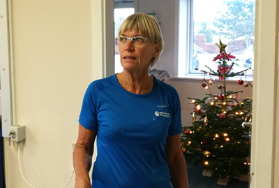
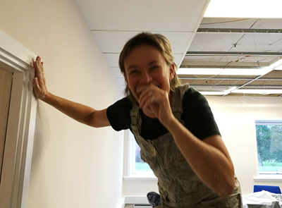

<div class="pages">
  <div data-page="566-fnis-maling-hygge-og-kvalitet" class="page navbar-fixed toolbar-fixed" >
    <div class="navbar">
      <div class="navbar-inner">
        <div class="left">
          <a href="#" class="link back icon-only"><i class="icon icon-back"></i></a>
          <!-- <a href="#" class="back link icon-only"><i class="icon icon-back"></i></a> -->
        </div>
        <div class="center">Fnis, maling, hygge og kvalitet</div>
        <!-- <div class="right"></div> -->
        <div class="right">
        </div>
      </div>
    </div>
    <div class="page-content" style="padding-top:45px;">
       <div class="content-block">
          <p><b>Fnis, maling, hygge og kvalitet</b></p>
          <center></center>
          <center></center>
          <center></center>
          <p>De sidste par dage har disse tre flittige "damer" svinget malergrejet i Sekretariatet.
          <br /><br />
          Heidi og Hans Henrik kan nu se frem til at rykke ind i dejlige lyse omgivelser, og byde både medlemmer og gæster velkommen til et kontor med "pift".
          <br /><br /> 
          Både vægge, lofter, paneler og karme har fået en tur.
          <br /><br /> 
          Tusind tak til Jette, Ketty og Cristina.</p>
        </div>
    </div>
    </div>
    </div>
  </div>
</div>
